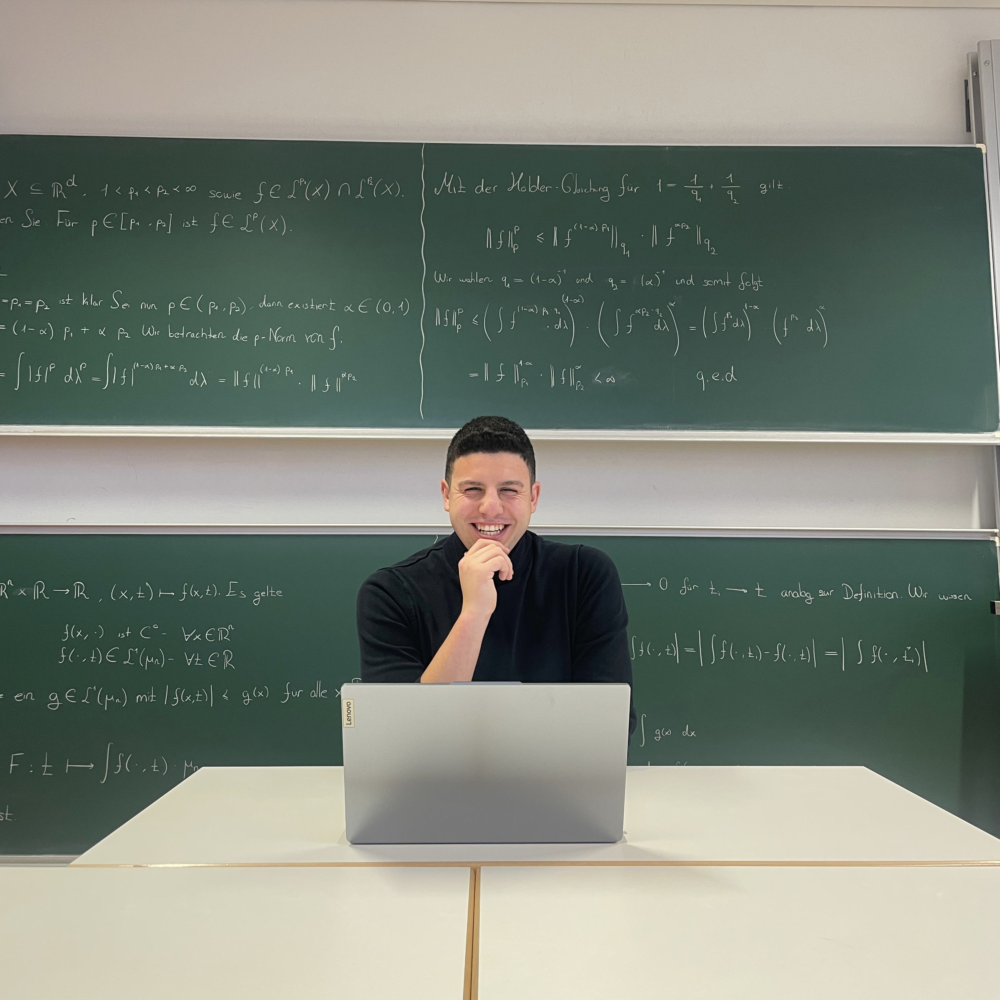

Willkommen auf meiner Webseite zum Tutorium in Analysis. Hier findest du Materialien, organisatorische Hinweise, zusätzliche Erläuterungen sowie weiterführende Hilfen zu den Veranstaltungen Analysis I und Analysis II.
Ziel dieser Seite ist es, Studierende beim Einstieg in die Hochschulmathematik fachlich und methodisch zu unterstützen und eine übersichtliche zentrale Anlaufstelle für wichtige Inhalte des Tutoriums bereitzustellen.

Die Seite bündelt zentrale Informationen, Materialien und ergänzende Hinweise rund um das Tutorium und soll dir helfen, Inhalte strukturierter zu lernen und mathematische Zusammenhänge klarer zu verstehen.
Materialien, Hinweise, zusätzliche Inhalte und hilfreiche Verlinkungen zur Veranstaltung Analysis I.
Zur Seite öffnenErgänzende Inhalte und künftige Materialien zur Fortsetzung der Analysis im folgenden Semester.
Zur Seite öffnenHinweise zum Lernen, zum Beweisen und allgemeine Informationen zur Nutzung der Webseite sowie zum Datenschutz.
Mehr erfahrenKontaktmöglichkeiten, persönliche Informationen zu mir und Hinweise dazu, wofür du dich an mich wenden kannst.
Zur KontaktseiteDie Analysis bildet für viele Studierende einen der ersten intensiven Berührungspunkte mit der universitären Mathematik. Im Mittelpunkt stehen dabei nicht nur Rechenverfahren, sondern vor allem präzises Argumentieren, das Verstehen mathematischer Strukturen und der sichere Umgang mit Definitionen, Sätzen und Beweisen. Diese Webseite soll dabei helfen, zentrale Inhalte geordneter nachzubereiten, typische Schwierigkeiten besser einzuordnen und den Übergang von schulischer zu universitärer Mathematik verständlicher zu gestalten.